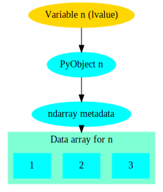

Why numpy?¶
The NumPy package provides a N-dimensional array type, and syntax and utility functions for working with these arrays.
In contrast to a python list, a numpy array can only hold elements of the same type. The element type can be seen via the ‘dtype’ attribute.
import numpy as np
a = np.array(((1,2,3),(4,5,6)))
a.dtype
a[0, 0] = "hello" # error!
a[0, 0] = 2**100 # error!
What these restrictions buy you is that the memory layout of a numpy array is very efficient, similar to what you see in low level languages like C or Fortran. This means operating on these arrays is very efficient; in fact, much of the speed advantage of numpy comes from the fact that array syntax is implemented in fast C code.
Due to the memory layout of numpy being compatible with C and Fortran, numpy arrays allows one to use functionality written in these other languages. Much of the SciPy ecosystem (NumPy, SciPy, etc.) consist of python wrappers around widely used and battle-tested numerical libraries written in C or Fortran such as LAPACK and BLAS.
The Python list
a_list = [1, "hello", 1.2]
has roughly the following layout in memory:

In contrast, the NumPy array
n = np.array((1,2,3))
has the memory layout like
Exercise 2.1¶
ndarray data structure –> better performance than pure python with “large” arrays
good for storing uniform data types
In the example above we saw that
2**100was too large. What is the default datatype of a numpy integer array if we don’t explicitly specify some type, and what is the largest possible integer we can store in such an element.What is the smallest negative element (that is, the largest absolute value of a negative number)? Is it different from the largest positive number, and if so, why?
What is the absolute value of the smallest negative element? Why?
Other ways of creating NumPy arrays¶
There are many different ways to create NumPy arrays, here’s a few of the most common ones:
np.zeros((2, 3)) # 2x3 array with all elements 0
np.ones((3, 2), bool) # 3x2 boolean array
np.arange(10) # Evenly spaced values in an interval
np.linspace(0,9,10) # similar to above... but what is the difference?
NumPy array slicing syntax¶
NumPy provides a convenient array syntax to reference subarrays, similar to MATLAB or Fortran.
a[low:high:step]
returns the array elements in the range [low, high) with a stride
of step. Equivalently for multidimensional arrays. For
multidimensional arrays NumPy by default stores arrays in row-major
order, like C. Note that this is in contrast to e.g. Fortran, MATLAB
or Julia that use a column-major layout.
Using array syntax efficiently is key to using NumPy in a fashion that leads to short as well as efficient code.
NumPy also provides so-called advanced indexing, where you can select elements with a list of indices.
a = np.zeros((3, 3))
b = a[(0, 1), (1, 1)]
b[0] = 1 # Will this modify a?
Views vs. copies¶
When slicing an array, you DO NOT get a copy of those elements, but rather a view. That is, the data elements are the same as in the original array
a = np.ones((2, 2))
b = a[1, 1:2]
b[0] = 2
Views rather than copies is more efficient, particularly for large arrays, but they can sometimes be confusing. Be careful!
If you do need a copy, NumPy arrays have a copy method to create a
copy rather than getting a view.
NOTE With advanced indexing, you always get a copy!
Array shape and size¶
NumPy arrays have a shape and size attribute.
a = np.zeros((2,3))
a.size # Number of elements
a.shape # shape tuple
We can modify the shape of an array with the reshape or resize
methods. Or for the special case of flattening an array to a 1D array,
ravel.
Combining, splitting and rolling arrays¶
For combining multiple arrays into a larger array, see the
concatenate, stack, block, and the more specialized
variants hstack, vstack, dstack.
Similarly, for splitting an array into multiple parts, there’s
split, hsplit, vsplit.
To roll an array, that is shift the elements along a give axis, use
roll.
Exercise 2.2¶
Create an array x of 100 evenly spaced numbers in the range
[-2*pi, 2*pi].
Next, create an array y, where each element is the sin of each
element in the previously created array.
Then, figure out the indices where the array y changes sign. What
are the x values for these indices?
NumPy I/O¶
NumPy has functionality for saving and loading NumPy arrays from
files. For reading/writing textfiles there is loadtxt and
savetxt. See also genfromtxt with more sophisticated handling
of missing values etc.
For large arrays, it’s faster to use a binary format. For these NumPy
defines a .npy format. Loading and saving these files can be done
with the load and save methods. There’s also the .npz
format, which is a zip archive containing several numpy ndarrays in
one file. .npz format files can be read/written with load,
savez and savez_compressed methods. This is a good choice for
temporary or intermediate files such as checkpoints etc. Note that the
format is Numpy-specific, and other languages might not easily be able
to read it. Similarly, for long-term archiving other formats might be
a better choice.
Random Numbers in NumPy¶
The numpy.random module contains functionality to create
pseudorandom numbers following different distributions.
Linear algebra in Numpy¶
The dot method provides a generalized dot product. It can compute
dot products of 1D vectors, matrix-vector products as well as
matrix-matrix products. It is an interface to the famous BLAS
library, of which multiple highly optimized versions exist. The
numpy.linalg module contains interfaces to the most common linear
algebra operations, such as calculating eigenvalues, Cholesky and
singular value decompositions, solving linear systems, least squares,
(pseudo)inverse. This module is an interface to the LAPACK library
(which in turn builds on top of BLAS).
Exercise 2.3¶
Remember our first exercise, implementing matrix multiplication? Now
do the same, but use NumPy arrays and the dot method. Compare
performance to the code you wrote yourself earlier, using the IPython
%timeit macro.
Exercise 2.4¶
Here’s a number of quick numpy exercises to get you a feel of numpy functionality, index manipulation etc.
Reverse a vector. Given a vector, reverse it such that the last element becomes the first, e.g. [1, 2, 3] => [3, 2, 1]
Create an identity matrix of size 4x4.
Create a 2D array with zeros on the borders and 1 inside.
Create a random array with elements [0, 1), then add 10 to all elements in the range [0.2, 0.7).
What is
np.round(0.5)? What isnp.round(1.5)? Why?In addition to
np.round, explorenp.ceil,np.floor,np.trunc. In particular, take note of how they behave with negative numbers.Recall the identity \(\sin^2(x) + \cos^2(x) = 1\). Create a random 4x4 array with values in the range [0, 10). Now test the equality with
np.equal. What result do you get withnp.allcloseinstead ofnp.equal?Create a 1D array with 10 random elements. Sort it.
What’s the difference between
np_array.sort()andnp.sort(np_array)?For the random array in question 8, instead of sorting it, perform an indirect sort. That is, return the list of indices which would index the array in sorted order.
Create a 4x4 array of zeros, and another 4x4 array of ones. Next combine them into a single 8x4 array with the content of the zeros array on top and the ones on the bottom. Finally, do the same, but create a 4x8 array with the zeros on the left and the ones on the rigth.
More quick NumPy exercises like this one over here.
Exercise 2.5¶
The topic of this exercise is np.einsum which implements the
‘Einstein summation convention’. The Einstein summation convention is a commonly used
when working with tensors, but can also be useful for succintly
representing array expressions.
For instance, matrix multiplication can be expressed as
Implement this with the help of np.einsum.
Einstein notation is also available in pytorch and tensorflow. For more information about Einstein notation in NumPy see
(lesson here)
Keypoints
K1
K2